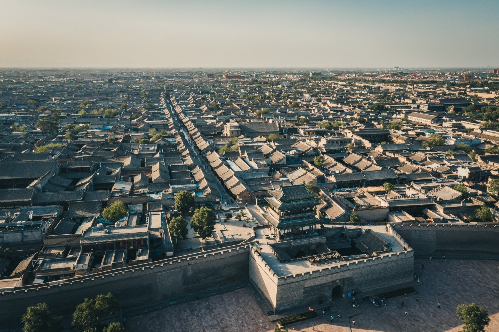
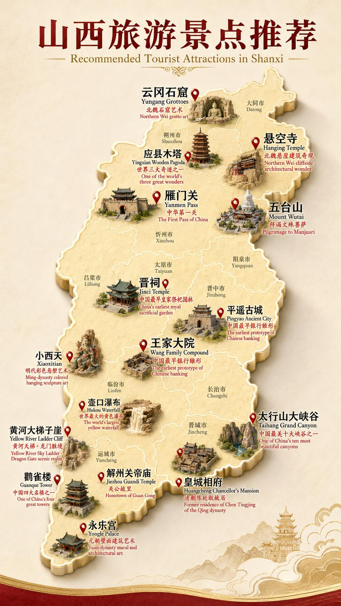
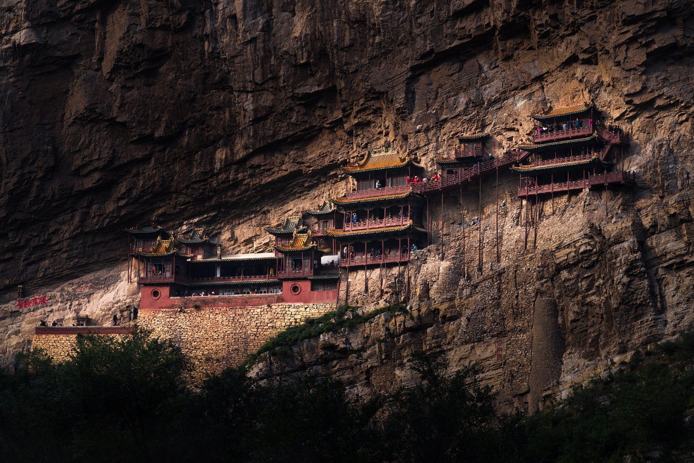
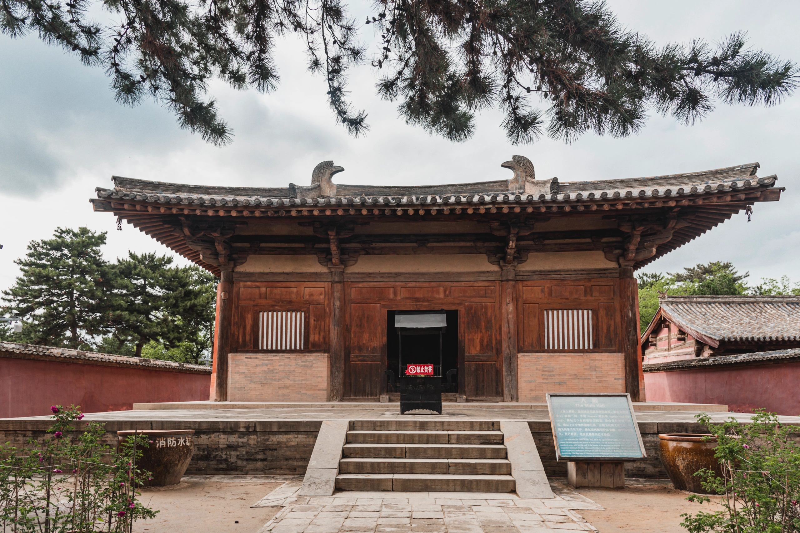
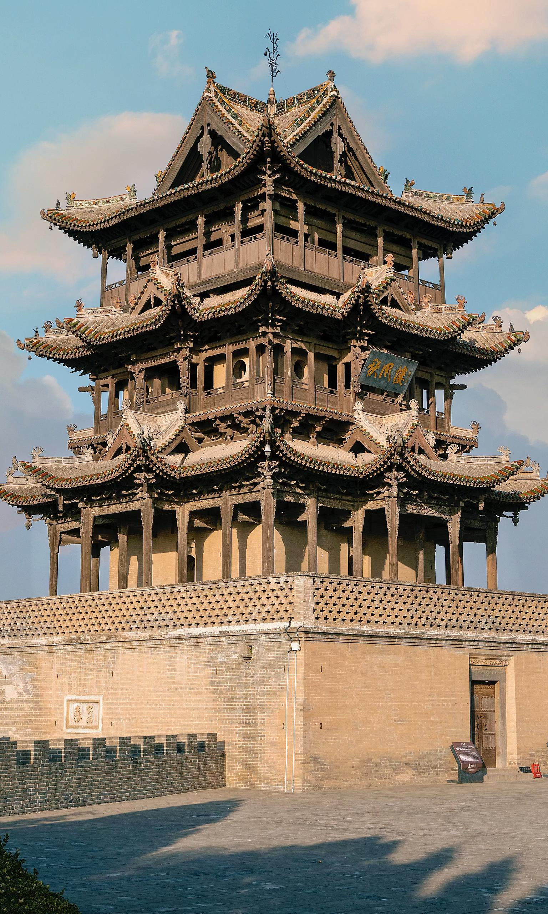
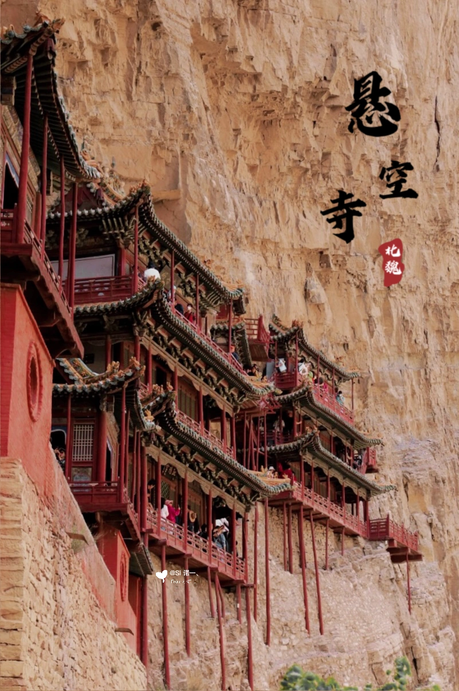

Pingyao Ancient City 平遥古城
A complete walled cityscape of streets, courtyards, gates, and financial memory.
A grand visual journey through China’s most concentrated landscape of ancient timber halls, cliff temples, grottoes, merchant compounds, sacred mountains, and walled cities.

The answer is not one reason, but a rare historical combination: dry climate, rugged geography, sacred traditions, strong local materials, merchant wealth, and continuous cultural memory.
The images are grouped by meaning: urban heritage, Buddhist stone carving, cliff architecture, and timber engineering.

A complete walled cityscape of streets, courtyards, gates, and financial memory.
Stone sculpture and Buddhist imagination carved into cliffs.

Architecture suspended between cliff, void, and belief.
Cold, dry air slows the decay of wood, earth, brick, painted surfaces, and murals.
Mountains, plateaus, and valleys helped shield many sites from repeated destruction.
Timber, loess, coal, bricks, tiles, and liuli glaze supported durable construction.
Buddhist, Daoist, Confucian, and folk traditions kept temples active and maintained.
Jin merchants transformed financial power into grand residential architecture.
Shanxi preserves a timeline from grottoes and Tang halls to Ming-Qing compounds.
Click any image to open a larger view. The Chinese labels are separated cleanly on vertical cards.
A monumental timber pagoda famous for height, age, and structural resilience.

A rare early timber hall with plain force and Tang architectural dignity.
Gray brick, red lanterns, axial order, and domestic hierarchy.
A Jinzhong merchant residence where gate, plaque, carving, and courtyard order express family prestige.

A Yuncheng landmark tied to ritual memory and the famous autumn-wind cultural landscape.
A frontal temple composition with layered eaves, painted details, and ceremonial symmetry.
A refined stage-like structure where theatrical space and temple architecture meet.

A closer view of cliff-side galleries and vertical supports.
Shanxi architecture is not only old; it is legible. A roofline tells us about hierarchy. A courtyard tells us about family order. A bracket set tells us how wood thinks. A cliff temple tells us how belief turns danger into wonder.
For students, Shanxi is a perfect case study: geography, technology, religion, economy, and aesthetics all become visible in architecture.
Four representative questions check students’ understanding of geography, climate, local resources, and religious architecture.
Students may try again after a wrong answer. The quiz ends after the fourth question.